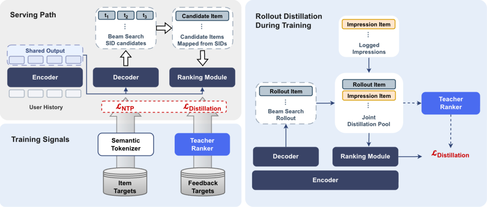
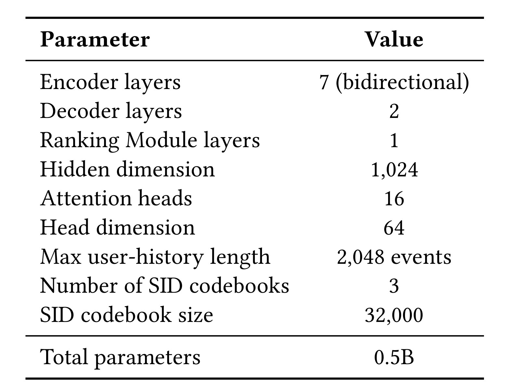
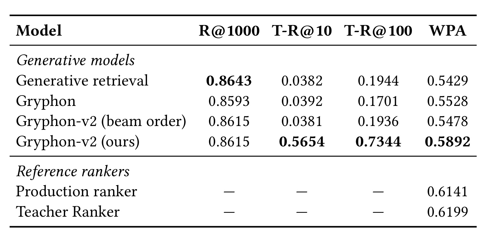
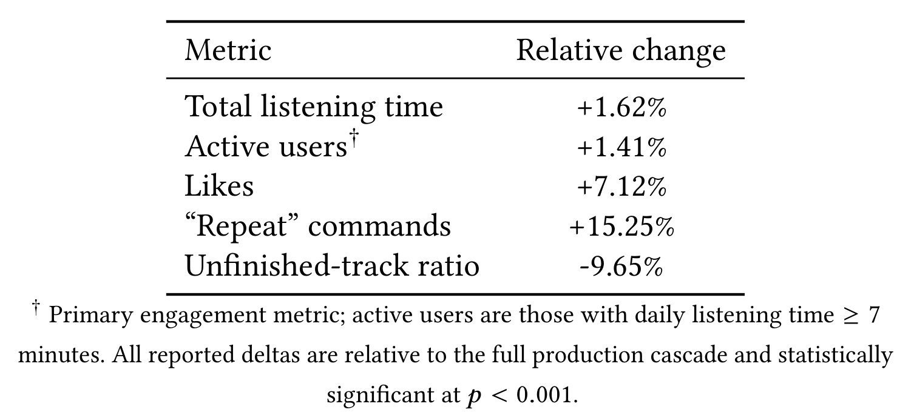
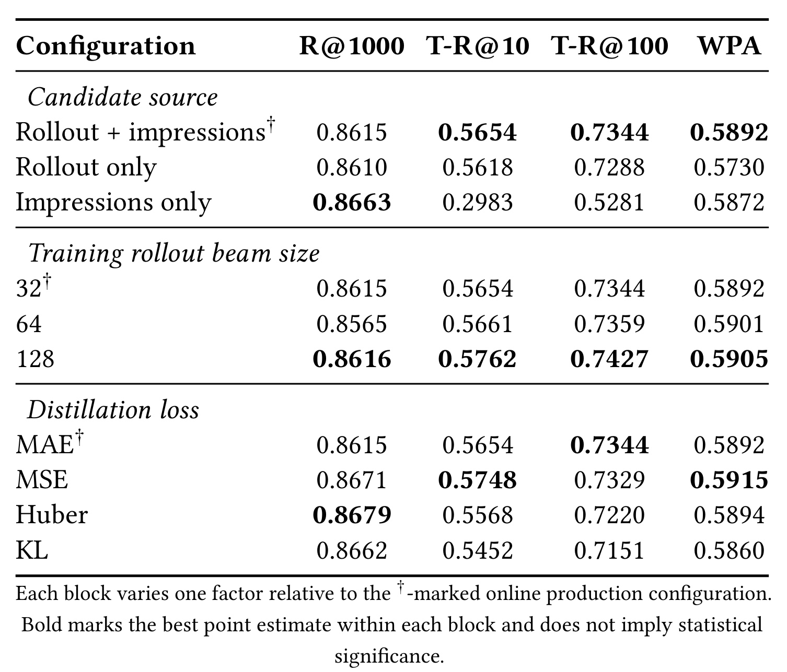
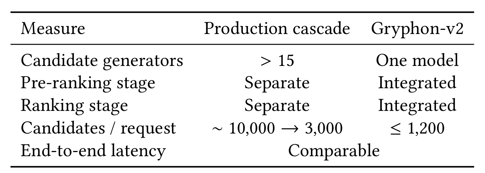

Gryphon-v2：用一个生成—排序模型替代生产级联
Yandex 的 Anna Lipkina、Daria Tikhonovich、Viktor Yanush 等人在 arXiv:2608.06213 公开了 Gryphon-v2: One Model in Place of a Cascade — Generate-and-Rank Recommender with Rollout Distillation。论文面向 Yandex Music 的无限个性化音乐流：同一个模型先生成 Semantic ID 候选，再以 item-level Ranking Module 给解析后的曲目排序，并把一个高容量 Teacher Ranker 的偏好蒸馏进线上模型。论文没有给出可核验的代码或独立项目页。与任务描述中的主题别名相比，本文标题以 PDF 首页的正式版本为准。
工业推荐级联虽然有效，却让用户历史编码、复杂特征流水线和服务阶段重复堆叠；仅靠 Semantic ID 的下一物品生成又无法表达生产排序器的细粒度、多目标偏好。真正的缺口是：能否只服务一个模型，同时兼顾大规模候选生成、item-level 最终排序与线上质量。
1. 背景和问题
成熟推荐系统往往把任务拆成候选生成、预排和精排。拆分的直接好处是每一阶段可以使用不同特征、模型容量和优化目标：召回追求覆盖，预排用较低成本缩小集合，精排再针对点击、时长、负反馈等目标做细粒度决策。但同一条用户历史会被多次读取、编码和搬运；候选在服务之间反复传递；每一阶段还要维护自己的特征一致性、训练样本和部署节奏。Gryphon-v2 所替换的生产路径不是一个玩具二阶段系统，而是 超过 15 个异构候选生成器先产生约 10,000 个候选，预排缩到 3,000，再交给独立生产 ranker。因此，“用一个模型替代级联”的难点并非删掉几个接口，而是一个模型能否同时承担原来分散在多种候选源和排序目标上的能力。
Semantic-ID 生成式推荐提供了简化召回链路的入口。每个 catalogue item 被量化为由粗到细的离散码，模型把用户历史作为条件，自回归地产生下一件物品的码；目录树约束确保完成的码能解析到真实商品。这样做把传统向量检索转成序列生成，也可以用统一的 Transformer 表示用户历史。然而，SID 的序列似然是“哪个码序列更像下一物品”的概率，不天然等价于生产 ranker 对具体 item 的多目标价值判断。多个 item 还可能共享同一 SID，碰撞类内的物品继承相同 beam score，单靠生成分数甚至无法区分它们。若仍把 beam likelihood 当最终顺序，生成器可能召回得不错，却在精排关心的长听、点赞、跳过和厌恶等信号上失真。
已有工业工作大致走两条路。第一条是在生成模型之后做 reward 或 preference 后训练，例如用学习到的 reward model、用户反馈或多任务 reward 修改生成 policy。这条路线直接改变生成器，却需要稳定的奖励、探索和训练控制。第二条把 retrieval 与 ranking 放入统一架构：候选生成负责广覆盖，额外的 item-level scoring 负责最终次序，并尽量复用历史表示。Gryphon 的前一版已经采用共享 Encoder 与 item-level scoring，但 Ranking Module 仍以 next-item 监督训练。Gryphon-v2 的关键变化是把高容量生产知识注入这个轻量排序模块：Teacher Ranker 只在训练时打分，线上不再多服务一个 teacher。作者明确把 teacher 类比为 reward model，但优化仍是 supervised distillation，没有 policy gradient，也没有让 reward 直接更新 Decoder。
这使论文的研究问题可以拆成三个相互约束的判断。第一，蒸馏 Ranking Module 会不会损害 SID 生成的候选召回；若统一架构为了排序质量而丢失 proposal 覆盖，就无法替代多源召回。第二，学生能否在当前 Decoder 实际会产生的候选上复现 teacher 的细粒度偏好，而不是只在历史曝光上拟合一个离线分布。第三，训练上的统一能否落到真实 serving path：线上必须只剩 Gryphon-v2，一个请求只编码一次历史，端到端时延还要与成熟级联可比。论文围绕这三点分别报告离线生成/排序指标、用户级线上 A/B 和服务栈对照；这些证据彼此补充，但不能互相替代。
还要注意这不是“端到端只优化一个用户价值目标”的工作。Decoder 仍由 next-token prediction 训练；Ranking Module 学的是 Teacher Ranker 的逐任务连续分数；最终线上顺序由固定权重组合多个任务头得到。统一发生在架构、共享历史状态和服务路径上，而不是把所有目标压成一个无监督的生成概率。这个边界解释了论文为何能利用成熟 teacher 的生产偏好，也解释了它为何仍依赖 teacher 质量、固定任务权重和日志曝光策略。
2. 方法
2.1 共享历史编码与 request-wise 训练实例
对每个请求 (u)，论文在请求发生时点截断用户历史，得到按时间排列的事件序列 (H_u=(h_{u,1},\ldots,h_{u,n_u}))。一个 7 层双向 Transformer 只编码一次历史，产生请求级上下文状态；随后 SID Decoder 和 Ranking Module 都复用同一组激活。这里的统一不是两个塔恰好使用同构 Encoder，而是同一个请求不再为 generation 与 ranking 各做一次历史前向。 原文的基本定义是：
符号解释：(u) 是一次推荐请求，(H_u) 是该请求截止时点之前的交互历史，(n_u) 是可用事件数，(E_u) 是双向历史 Encoder 输出的上下文化状态序列。训练时，NTP 损失和排序蒸馏损失都会通过不同路径更新共享 Encoder；推理时，(E_u) 仍只计算一次。因此共享状态既承载用户兴趣，也构成降低服务成本的直接机制。
训练样本按 request 组织，而不是把每个 item 当作完全独立样本。(M_u) 表示该请求中真实展示的 impression items 及其反馈，(P_u\subseteq M_u) 是得到 like 或 long listen 且没有 dislike 的正样本集合；当前 Decoder 在同一请求上生成 rollout 候选集合 (G_u)。Teacher Ranker 与学生 Ranking Module 对 (M_u\cup G_u) 中的相同候选分别打分。这样，一个 (E_u) 可以服务多个正样本、多个 rollout item 和多个曝光 item，避免为每个候选重复编码历史，也让蒸馏损失能在请求内部保持用户条件一致。
2.2 Semantic ID 生成、碰撞解析与 item budget
每个 catalogue item (i) 被残差 K-means 量化为分层 Semantic ID。论文使用三个 codebook，每个 codebook 大小为 32,000，码序列由粗到细表示 item；多模态 item 表示来自 Qwen2.5-Omni 提取的音频与文本特征，再经小型 Transformer 和对比目标与协同信号对齐。SID 定义与正样本 teacher-forced NTP 为：
符号解释：(\Phi) 把 item (i) 映射到 (L) 个离散码；(i^+) 是请求里的正反馈 item；(s_{<\ell}^+) 是第 (\ell) 个位置之前的 SID 前缀；(\theta) 表示生成路径参数；(P_u) 允许同一请求有多个正目标。该损失只要求 Decoder 对正 item 的 SID 给出高条件概率，并不直接学习 teacher 的多任务 item score。
推理使用 catalogue-trie-constrained beam search，任何完成的 SID 都至少能解析到一个 catalogue item。设 (B_u^{(K)}) 为 beam size (K) 下的有效 SID 集合，同一 SID (\sigma) 的碰撞类与未限额 item 池写成：
符号解释：(C_\sigma) 是所有共享 SID (\sigma) 的 item；(\widetilde I_u) 是展开全部 beam 后的候选池；如果它超过 item budget，就按 beam score 从低到高移除 SID 及其整个碰撞类，得到保留 beam (B_{u,\mathrm{keep}}^{(K)}) 和最终候选集合 (I_u)。线上配置生成 1,024 个有效 SID，碰撞展开后最多保留 1,200 个 item。beam score 只决定 SID 是否进入 proposal，以及极少数超预算时先删谁；所有保留 item 的最终次序由 Ranking Module 决定。
2.3 Item-level Ranking Module 与 training-only Teacher Ranker
Ranking Module 为每个解析后的 item 构造候选表示。线上部署中，候选特征 (x_i) 包含 item identifier 与 SID；两者用和历史 Encoder 共享统一 embedding table 的 compositional multi-hash embeddings 表示，SID 还展开为 prefix n-gram 特征。候选表示把自己当 query，对共享历史状态做 cross-attention，再经任务专属 head 产生多目标分数：
符号解释：(x_i) 是候选 item 的标识与 SID 特征，(e_i) 是 item encoder 输出，(\widetilde e_{u,i}) 是候选读取用户历史后的条件表示，(\mathcal T) 是 ranking tasks 集合，(\hat r_{u,i}^{t}) 是学生对任务 (t) 的分数，(w_t) 是预设组合权重，(\hat R) 是最终排序标量。候选按 (\hat R) 降序输出，线上不再接独立 pre-ranker 或 ranker。
Teacher Ranker 是更大的 sequential model：同样以历史 Encoder 配 cross-attention ranker，不依赖手工 tabular features，可对任意历史—item 对给出多任务连续分数。它沿时间序列自回归训练，能从一个序列的多个位置获得监督，使用最长 8,000 个事件的历史，并基于一年日志训练；Gryphon-v2 的 served Encoder 最长为 2,048 个事件。teacher 曾在本研究之前的内部离线和线上评估中优于生产 ranker，但那些结果不属于本文的受控实验。Teacher Ranker 的推理成本使其不适合全流量直接服务；它只在训练时产生标签，绝不属于 Gryphon-v2 的 serving graph。
2.4 Rollout Distillation 与联合训练
只用 logged impressions 做蒸馏，会把学生限制在生产级联过去展示过的 item 上；只用当前 Decoder rollout，又可能丢掉生产曝光所覆盖的长尾和稳定反馈。Gryphon-v2 因此对两种候选源分别计算逐任务 MAE。当前 Decoder 每个训练 step 都以同步参数做 constrained beam search，没有 checkpoint lag；生成 SID 解析为 (G_u)，teacher 和学生对同一批 item 打分。日志曝光 (M_u) 则直接来自相应请求。两个损失是：
符号解释：(r_{u,i}^{T,t}) 是 Teacher Ranker 对请求 (u)、item (i)、任务 (t) 的连续目标，(\hat r_{u,i}^{t}) 是学生预测；(G_u) 对齐当前模型真实会服务的候选分布，(M_u) 扩展到生产曝光分布。每个 source loss 都先按自身候选数归一化，再以系数一相加。论文说超过 90% 的 distinct distillation candidates 来自 rollout，描述的是候选覆盖占比，不是 rollout 损失占总蒸馏权重的 90%。beam search 不接收梯度，优化仍是监督 MAE；NTP 更新 Decoder 与共享 Encoder，蒸馏更新 Ranking Module 与共享 Encoder。

Figure 1 左侧把 serving 与 training signals 叠在同一架构上：User History 只进入一次 Encoder；Decoder 从共享状态生成 SID beam，SID 映射为 Candidate Items；Ranking Module 再读取共享状态，把 item-level 分数作为最终次序。Semantic Tokenizer 的 item targets 对应 (L_{\mathrm{NTP}})，Teacher Ranker 的 feedback targets 对应 (L_{\mathrm{distill}})。线上只保留深色的 Encoder、Decoder 和 Ranking Module，图中的 teacher 蓝色模块属于训练信号来源。
右侧放大了 Rollout Distillation：当前 Decoder 通过 beam search 产生 Rollout Item，日志提供 Impression Item，两者进入 Joint Distillation Pool；Ranking Module 对池中 item 打分，Teacher Ranker 提供目标。这个布局解释了为什么 teacher 必须能基于历史对任意 user-item pair 打分，也解释了 rollout 与 impressions 的互补职责。图中的虚线 teacher 路径不是在线二次排序，更不是 Gryphon-v2 推理阶段的一部分。训练部署后模型每十分钟发起一次新数据更新，每次更新耗时为数十分钟，通常使用不到一小时前的事件；这一更新节奏属于部署设置，并不能替代对长期稳定性的实验。
3. 实验结果
3.1 数据、基线、模型规模与评价口径
离线实验使用 Yandex Music 一个纯推荐驱动的无限音乐流，没有搜索或编辑上下文。训练/测试来自两周交互日志，按时间切分，测试覆盖最后一天；只保留至少有一个正 impression 的请求，正反馈定义为 like 或 long listen 且没有 dislike。离线模型按时间顺序只遍历该窗口一次。线上实验从四周 checkpoint 初始化，并在运行中持续更新。因此“两周训练”的离线结果与“在线四周初始化+增量更新”的 treatment 不能混为同一训练口径。
两个匹配基线分别是：只有 SID Decoder、按 beam likelihood 排序的 Generative retrieval；以及架构相同但 Ranking Module 用 next-item supervision 训练的 Gryphon。三者共享 tokenizer、Encoder-Decoder backbone、history features、candidate budget 和 constrained decoding；Gryphon 与 Gryphon-v2 的 Ranking Module 结构也相同，所以二者差异主要对应监督来源。Production ranker 与 Teacher Ranker 只作为参考 ceiling：它们用一年日志训练，远多于生成模型的两周窗口，不能作为严格同预算基线。
附录披露 Gryphon-v2 约 0.5B 参数，7 层双向 Encoder、2 层 Decoder、1 层 Ranking Module，hidden dimension 1,024、16 个 attention heads、每头 64 维；最大历史 2,048 个事件。SID 有 3 个 codebooks，每个 32,000。离线训练用 AdamW 和 FSDP2，128 张 GPU，每张卡 micro-batch 32，四步梯度累积后有效 batch 为 16,384；学习率先从 (10^{-5}) 线性升至 (3\times10^{-4})，再降到 (7\times10^{-5})。这些信息说明 Ranking Module 的确轻量，但论文未给出训练总 GPU 时长、teacher 刷新成本或完整硬件型号，仍不足以复算总训练成本。

Table 5 最值得注意的不是“0.5B”这个总数，而是容量分配：历史理解集中在 7 层双向 Encoder，生成只用 2 层 Decoder，最终 item ranking 只加 1 层。这一结构与服务主张一致——不再启动一个独立、长历史的 ranker，而是在共享的 2,048-event 表示上做浅层候选 cross-attention。三个 32k codebook 理论组合空间很大，但真实 catalogue 映射、碰撞分布与量化构造细节没有公开；因此不能从 codebook size 直接推出 catalogue 覆盖率或碰撞率。Independent Code Rate 0.98 只表明所用索引的码独立性较高，不等同于所有碰撞都消失，也不能替代按请求统计的截断率与碰撞尾部分布。
3.2 离线主结果：生成不退化，排序蒸馏显著贴近 teacher
论文用三类指标隔离不同部件。Recall@1000 在 reranking 前、按 beam score 排列的解析候选上计算 held-out target 召回，所以只看 generation。TeacherRecall@(k) 在同一个 serving-time candidate pool 上，比较学生与 teacher 的 top-(k) 集合重合：
符号解释：(s_u^{\mathrm{model}}) 与 (s_u^{\mathrm{teacher}}) 是对同一生成候选池的学生、teacher 分数，(U) 是评估请求集合；1 表示 top-(k) 完全相同，0 表示不相交。由于这个 teacher 同时提供训练标签，TeacherRecall 只衡量蒸馏 fidelity，不是独立的用户价值，也不能证明 teacher 本身是最优推荐策略。
WPA 则在生产级联曝光产生的相邻 impression pairs 上用 engagement labels 评估排序。参与 pair 的反馈等级为 like (>) play (>) skip (>) dislike，且权重差更大的 pair 贡献更大：
符号解释：(\mathcal P) 是按 (t_i>t_j) 定向的有效 item pair，(t) 是预设 engagement weight，(s(\cdot)) 是参与比较的排序分，(\mathbf 1) 表示顺序正确时取 1。WPA 使用已有级联的曝光日志，因此衡量的是旧 exposure policy 下的排序一致性，不能覆盖 Gryphon-v2 自己新暴露 item 的全部质量。

Table 1 显示 Gryphon-v2 的 R@1000 为 0.8615，位于 Generative retrieval 的 0.8643 与 Gryphon 的 0.8593 之间，也在论文给出的约 0.003 run-to-run 标准差附近。beam order 与启用 Ranking Module 的 Gryphon-v2 共享同一个 R@1000，因为该指标在 reranking 前计算；这支持“加入蒸馏排序没有破坏候选生成”，但不支持“生成召回显著提升”。
排序差异更明显。Generative retrieval、Gryphon 和 Gryphon-v2 beam order 的 T-R@10 都低于 0.04，T-R@100 不到 0.20；启用蒸馏 Ranking Module 后，T-R@10 达 0.5654、T-R@100 达 0.7344。Gryphon 与 Gryphon-v2 的 item ranker 架构相同，所以量级差距说明关键在 teacher supervision，而不是“多加一层排序”本身。WPA 从 Gryphon 的 0.5528 提升到 0.5892，为生成模型中最高；但 Teacher Ranker 0.6199、Production ranker 0.6141 用一年日志训练，只能作为上下文 ceiling。作者计算蒸馏分别关闭了 Gryphon 到 teacher/production ranker WPA 差距的 54%/59%，合理读法是“两周学生吸收了多数离线差距”，而不是已与成熟 ranker 等价。
3.3 线上 A/B：替换完整级联后的用户行为变化
线上实验按用户分配互斥 control 与 treatment，每臂各占 eligible users 的 8%。Control 是完整生产级联：>15 个候选生成器、约 10,000 候选、预排至 3,000、再由 production ranker 排最终列表。Treatment 只服务一个 Gryphon-v2：生成 1,024 个有效 SID，碰撞展开后最多给 1,200 个 item 排序，并由单层 Ranking Module 直接输出 slate；没有下游学习式预排或精排。这一设计测量的是“替换整个级联”的 aggregate treatment effect，而不是 Rollout Distillation、Ranking Module 或在线更新任一组件的独立边际效应。

Table 2 报告的主 engagement 指标是 active users，即日收听时间至少 7 分钟的用户，treatment 相对 control 增加 1.41%。Total listening time 增加 1.62%，Likes 增加 7.12%，“Repeat” commands 增加 15.25%，Unfinished-track ratio 下降 9.65%；论文称五项相对变化均在 (p<0.001) 下显著。符号方向需要正确读取：unfinished 为负表示未听完比例降低，与其余正向互动变化同向。
这些结果支持在该音乐 surface、该分流样本与论文运行条件下，一个 generate-and-rank 模型可以作为 treatment serving path 替换完整级联，并观察到有利的用户行为差异。但论文没有披露线上实验持续时长，也没有给绝对基线、样本量、置信区间、方差估计细节或多重检验处理。因而不能把结果扩大为长期留存、稳定收益或全量部署因果结论；更不能根据 p 值推断效应规模会在其他推荐场景保持。作者自己的限制章节也只把它解释为 sampled traffic 上的短期可行性，并要求更长、更广部署继续测量。
3.4 消融：候选来源、训练 beam 与蒸馏损失
两类候选源承担不同职责。Rollout 使用当前 Decoder 的 constrained decoding，最贴近线上模型将遇到的 item 分布；logged impressions 来自生产曝光，能覆盖当前生成器尚未提出但用户真实看过的 item。若只看 distinct candidates，rollout 占比超过 90%；由于两项 loss 各自按候选数归一化、再等系数相加，这个占比不意味着 rollout 监督在梯度上天然占 90%。训练 beam 为 32，而线上 beam 为 1,024；完全匹配线上宽度会让每个候选都经历生成、解析和 teacher 打分，成本过高。

Table 3 的 candidate-source block 清楚显示互补性。Rollout only 的 T-R@10/100 为 0.5618/0.7288，接近混合配置的 0.5654/0.7344，但 WPA 只有 0.5730；Impressions only 的 WPA 为 0.5872，接近混合配置 0.5892，却只有 T-R@10=0.2983、T-R@100=0.5281。也就是说，rollout 更能让学生在自己的候选分布上复现 teacher，impressions 更贴近日志 label 排序；混合方案没有在每一个数字上绝对最高，却同时避免两种单源方案各自最明显的短板。
训练 beam 从 32 增到 64、128 后，部分 teacher fidelity 与 WPA 点估计小幅上升；beam 128 的 T-R@10=0.5762、T-R@100=0.7427、WPA=0.5905，但成本更高。论文明确这些是 post-hoc 描述性点估计，未宣称统计显著；线上采用的 beam 32 在消融前就已固定。Loss block 同样没有统一赢家：MSE 的 T-R@10 与 WPA 最高，MAE 的 T-R@100 最高，Huber 的 R@1000 最高。上线配置使用 MAE，MSE 的优势只是离线观察，不能事后改写成部署方案已经选择了最优 loss。
3.5 服务效率、吞吐与栈简化的准确口径
生产级联在请求级先产生约 10,000 候选、预排 3,000，再用独立 ranker；Gryphon-v2 生成 1,024 个有效 SID，碰撞展开后排序不超过 1,200 个 item。这里 1,024 是 SID beam 数，≤1,200 是解析后的 item budget，二者不可互换。单模型路径通过 NVIDIA Triton Inference Server 在 GPU 上服务，端到端测量包含 CPU 特征构造、网络传输、推理服务开销、候选生成和排序，而非只量 GPU kernel。

Table 4 把“简化”落到可核验的对象：>15 个 candidate generators 变成 one model，独立 pre-ranking/ranking 变成 integrated，候选路径由约 10,000→3,000 变成≤1,200。论文只给出 end-to-end latency comparable，没有公开毫秒数、分位数、GPU 型号、batching 或成本金额，所以能下的结论是“在匹配流量条件下时延相当”，不能写成显著降延迟或降低多少机器成本。候选 fan-out 约少一个数量级也不自动等价于计算量同倍下降，因为自回归 beam search、cross-attention 和硬件利用率不同。
论文另称 Gryphon-v2 的吞吐约为“同一个 generative backbone 后在线串接 Teacher Ranker”路径的 4 倍。这个参照并不是 Table 4 的 production cascade。原因是 Gryphon-v2 复用一次 2,048-event 历史编码，并用轻量 Ranking Module 排序；online Teacher path 还要独立对最多 8,000-event 历史做昂贵前向。正确理解是蒸馏移除了 teacher 在线推理的成本，证明“不要把 teacher 带上线”的价值；论文没有报告 Gryphon-v2 相对成熟 production cascade 的吞吐倍数。因此只能同时保留两条分开的结论：相对生产级联是 latency comparable，相对 online Teacher Ranker path 是约 4x throughput。
4. 总结
4.1 我的判断与工程启发
Gryphon-v2 最有价值的地方，不是再次证明 SID 可以召回，而是把“生成候选”和“最终 item 排序”放在共享历史状态上，并用训练期 teacher 把生产多目标偏好压进轻量 Ranking Module。Decoder 的 beam likelihood 只控制 proposal，Ranking Module 的 item score 决定最终 slate；这解决了 SID 碰撞内无法排序和生成概率校准不足两个具体问题。Rollout candidates 让学生在自身 serving distribution 上接受 teacher 监督，logged impressions 则补足生产曝光覆盖。离线表明生成召回基本不退化、teacher fidelity 大幅提高；线上 treatment 在单一音乐流上替换完整级联并观察到 active users +1.41% 等变化；服务端则保留相当端到端时延。
对工业系统而言，可迁移的设计原则有三点。第一，把昂贵模型放到 label generation 或周期性训练环，而不是让它成为全流量在线依赖；teacher 的可扩展性与 served student 的成本由此解耦。第二，当生成器决定候选分布时，蒸馏样本必须包含当前 policy 的 rollout，否则 item ranker 可能只会处理旧日志曝光。第三，共享 Encoder 的收益需要在请求级做到底：如果 generation 与 ranking 仍各自重编码历史，统一模型只会停留在参数命名层面。对大模型蒸馏的启发也很直接：on-policy candidate collection 可以与纯监督目标结合，不必把“rollout”自动等同于 RL。
4.2 局限与后续跟进
- 线上持续时长与外推不足。 每臂各占 8% eligible users，但论文没有披露实验持续时长、样本量、置信区间与绝对基线；单一 Yandex Music surface 的观察不能推出长期留存、稳定性、全量流量或其他内容域效果。
- 组件因果不可分。 Treatment 同时更换候选生成、预排、精排、蒸馏监督和在线更新，报告的是整体替换效应，不能把 +1.41% 单独归因于 Rollout Distillation 或 Ranking Module。
- 离线指标存在同源与曝光偏差。 TeacherRecall 使用同一个 Teacher Ranker 作为训练目标与评价参照，只说明 fidelity；WPA 来自生产级联曝光，无法评价 Gryphon-v2 新候选的完整用户价值。
- 生态质量未测。 论文没有报告长尾 catalogue coverage、艺术家多样性、新颖性、曝光集中、公平性或创作者侧影响；候选更少是否加剧头部集中仍未知。
- 没有同预算 RL 对照。 Rollout Distillation 是监督蒸馏，作者未与 RL post-training 做受控比较，不能宣称它在质量、稳定性或计算效率上优于 RL；两者可能互补。
- 复现信息不完整。 生产日志、SID 构造细节、teacher tasks/权重/特征、代码和在线硬件均未公开；公开超参数足以理解结构，不足以外部重现实验。
后续最值得做的三项检查是：其一，在固定生成 checkpoint 下分别关闭 impression/rollout 蒸馏、冻结在线更新，设计能隔离组件边际作用的线上或 shadow 实验；其二，补充按周/月观察的留存、长尾覆盖、artist exposure Gini、新颖性和分群稳定性，并公开实验持续时间与置信区间；其三，在相同 teacher 打分预算、相同候选数和相同训练算力下比较监督 rollout distillation、reward-model RL 与二者组合。工程复现还应记录 SID 碰撞分布、item-budget 截断率、beam search 分位延迟、teacher 日刷新成本与模型更新陈旧度。只有这些信息补齐后，才能判断这条路线是可移植的工业范式，还是高度依赖 Yandex Music 数据与基础设施的成功案例。